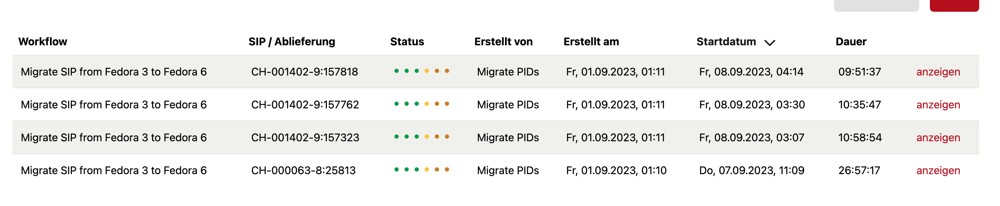
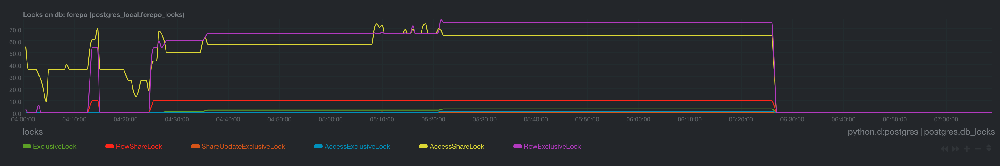
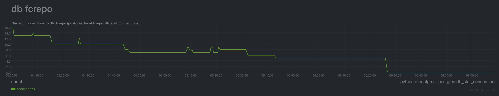
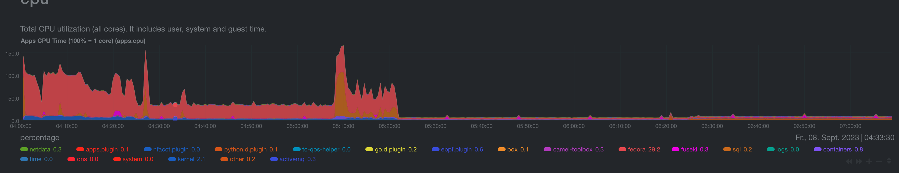
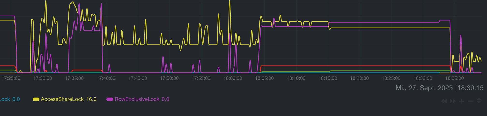

Suggestion from Tech Call: Setup New Relic Monitoring for Fedora 6.
FCREPO-3910 Ingests against Fedora 6 hang indefinitely
| Type | Bug |
|---|---|
| Status | Closed |
| Resolution | Answered |
| Priority | High |
| Reporter | Thomas Bernhart |
| Assignee | Thomas Bernhart |
| Created | 2023-10-26 14:58 UTC |
| Updated | 2025-03-06 16:16 UTC |
| Resolved | 2025-03-06 16:16 UTC |
| Relates to | FCREPO-3970 database connection timeout when committing a long running Fedora transaction |
Environment
Custom Ingest Action written in Typescript running on separate hostFedora: Version 6.4.0 (Running in Docker)
Database: PostgreSQL 12.14 (Running in Docker)
Catalina options for Fedora:
-Dfcrepo.home=/fcrepo_home
-Dfcrepo.db.url=jdbc:postgresql://db/fcrepo
-Dfcrepo.db.user=postgres
-Dfcrepo.db.password=PASSWORD
-Dfcrepo.db.max.pool.size=20
-Dfcrepo.jms.enabled=true
-Dfcrepo.jms.baseUrl=https://446repositoryhashed-lime-cosmos.docuteam.cloud
-Dfcrepo.jms.destination.type=queue
-Dfcrepo.metrics.enable=true
-Dfcrepo.log=INFO
-Dfcrepo.activemq.configuration=file:///opt/fedora/config/activemq.xml
Description
The issue has been discussed a while back in https://wiki.lyrasis.org/display/FF/2023-09-21+-+Fedora+Tech+Meeting.
Here is our initial description of the issue (copied from https://docuteam.atlassian.net/browse/COSCLOUD-312):
Encountered a couple of times now with the larger migrations. This issue looks closer at the effects we see right now on 446ingesthashed-lime-cosmos, but the situations have looked the same on other systems.
Generally, the executions are marked as still running feeder, but do not continue.

The package size of the oldest execution is large, in this case 128 GB. All executions are stuck at the step committing transactions. The oldest execution is stuck there since 2023-09-08 04:24:48.20 .
In Netdata, a high number of locks is reported that barely changes over two hours.

After these two hours, the connections eventually reach 0.

There is some CPU activity by Fedora during this time, although this could be because the other executions are still writing data. 05:21 is the time when the migration for CH-001402-9:157323 starts committing its data.

In this case, we do not really have an error in the Fedora logs. The last message is DEBUG 03:21:25.043 [http-apr-8080-exec-2] (TransactionImpl) Committing transaction 8dc2f06f-a2bf-49c8-a294-98a722e8f7e1 (note that the containers run in UTC).
We currently assume that the issue is somehow related to multiple transactions running at the same time in Fedora 6.
Here is what we have tried so far:
- Increase the locks per transaction for PostreSQL.
- Our developer was able to replicate the issue: I setup Netdata in the local box development stack. What I noted there was that once Fedora starts committing the large DIP, the locks go up to 127, which is an odd number.
- Looking again at Netdata, I noted that the error occured for both 006 and 446 when 64 AccessShareLocks were requested. My hunch right now is that it’s the 64 locks per transaction limit of Postgres that we are hitting and Fedora / Hikari does not handle this correctly, thus all the connections die after two hours.
- I pushed a commit to https://bitbucket.org/docuteam/box/pull-requests/296 , increasing the lock limit to a 1024 and deployed it to all instances.
- Issue occurred again on the test instance despite the increased amounts of locks.
- Pushed and deployed a commit for now which should log when the deadlock detection by Postgres gets active.
Findings:- on one of the test incances (642), a couple of those log_locks_wait started to appear:
2023-09-27 14:28:25.923 UTC [12483] LOG: process 12483 still waiting for ShareLock on transaction 755599 after 1000.173 ms 2023-09-27 14:28:25.923 UTC [12483] DETAIL: Process holding the lock: 12477. Wait queue: 12483. 2023-09-27 14:28:25.923 UTC [12483] CONTEXT: while updating tuple (4113,44) in relation "containment" 2023-09-27 14:28:25.923 UTC [12483] STATEMENT: UPDATE containment SET updated = $1 WHERE fedora_id = $2
2023-09-27 14:28:55.000 UTC [12461] LOG: process 12461 still waiting for ExclusiveLock on tuple (4113,44) of relation 16462 of database 16384 after 1000.309 ms 2023-09-27 14:28:55.000 UTC [12461] DETAIL: Process holding the lock: 12483. Wait queue: 12461. 2023-09-27 14:28:55.000 UTC [12461] STATEMENT: UPDATE containment SET updated = $1 WHERE fedora_id = $2
2023-09-27 14:32:02.871 UTC [12480] LOG: process 12480 still waiting for ExclusiveLock on tuple (4113,44) of relation 16462 of database 16384 after 1000.134 ms 2023-09-27 14:32:02.871 UTC [12480] DETAIL: Process holding the lock: 12483. Wait queue: 12461, 12480. 2023-09-27 14:32:02.871 UTC [12480] STATEMENT: UPDATE containment SET updated = $1 WHERE fedora_id = $2
and a couple of those queries are still running.
SELECT pid, now() - pg_stat_activity.query_start AS duration, query, state FROM pg_stat_activity WHERE (now() - pg_stat_activity.query_start) > interval '5 minutes';
result:
pid | duration | query | state -------+-----------------+------------------------------------------------------------------+--------------------- 12477 | 00:51:32.011932 | DELETE FROM ocfl_id_map_session_operations WHERE session_id = $1 | idle in transaction 12480 | 00:46:32.457583 | UPDATE containment SET updated = $1 WHERE fedora_id = $2 | active 12483 | 00:50:09.406411 | UPDATE containment SET updated = $1 WHERE fedora_id = $2 | active 12461 | 00:49:40.329056 | UPDATE containment SET updated = $1 WHERE fedora_id = $2 | active 15957 | 00:36:56.64656 | UPDATE containment SET updated = $1 WHERE fedora_id = $2 | active 16827 | 00:22:46.375321 | DELETE FROM ocfl_id_map_session_operations WHERE session_id = $1 | active
- I assume 12477 is doing a rollback and blocks everything else. I pushed a commit to add a timeout for idle in transaction and deployed it to all systems.
box: db398b89 Set `idle_in_transaction_timeout` to 30 minutes (This aligns it with the max lifetime for a connection in the Hikari pool.)
- on one of the test incances (642), a couple of those log_locks_wait started to appear:
- Current observations:
- Once actions.js (that’s our custom ingest action) confirms to commit a transaction, Fedora locks the containment table with a RowExclusiveLock and starts committing the storage session.
INFO 16:03:57.403 [http-apr-8080-exec-2] (Transactions) Committing transaction 'b0620cd9-3e0f-4ff8-b544-18381f5cb804' DEBUG 16:03:57.404 [http-apr-8080-exec-2] (TransactionImpl) Waiting for operations in transaction b0620cd9-3e0f-4ff8-b544-18381f5cb804 to complete before committing DEBUG 16:03:57.404 [http-apr-8080-exec-2] (TransactionImpl) Committing transaction b0620cd9-3e0f-4ff8-b544-18381f5cb804 DEBUG 16:04:05.831 [http-apr-8080-exec-2] (ContainmentIndexImpl) Commit of tx b0620cd9-3e0f-4ff8-b544-18381f5cb804 complete with 2335 adds, 0 deletes and 0 purges DEBUG 16:04:26.262 [http-apr-8080-exec-2] (DbSearchIndexImpl) Transaction data has been removed from the search transaction tables for txId=b0620cd9-3e0f-4ff8-b544-18381f5cb804 DEBUG 16:04:26.262 [http-apr-8080-exec-2] (DbSearchIndexImpl) Commit of tx b0620cd9-3e0f-4ff8-b544-18381f5cb804 complete with 2335 resource adds, 24526 resource associations adds, 0 rdf types adds0, resource deletes, 0 resource/rdf type associations deletes DEBUG 16:04:26.262 [http-apr-8080-exec-2] (OcflPersistentStorageSession) Starting storage session b0620cd9-3e0f-4ff8-b544-18381f5cb804 prepare for commit DEBUG 16:04:26.262 [http-apr-8080-exec-2] (DbFedoraToOcflObjectIndex) Committing FedoraToOcfl index changes from transaction b0620cd9-3e0f-4ff8-b544-18381f5cb804 DEBUG 16:04:27.511 [http-apr-8080-exec-2] (OcflPersistentStorageSession) Starting storage session b0620cd9-3e0f-4ff8-b544-18381f5cb804 commit
- As soon as others want to commit their transaction, they are waiting until the previous transaction removes its RowExclusiveLock.
2023-09-27 16:04:35.367 UTC [11322] LOG: process 11322 still waiting for ShareLock on transaction 761641 after 1000.085 ms 2023-09-27 16:04:35.367 UTC [11322] DETAIL: Process holding the lock: 11415. Wait queue: 11322. 2023-09-27 16:04:35.367 UTC [11322] CONTEXT: while updating tuple (4113,45) in relation "containment" 2023-09-27 16:04:35.367 UTC [11322] STATEMENT: UPDATE containment SET updated = $1 WHERE fedora_id = $2
- 11415 in this case is again a delete query against the ocfl_id_map_session_operations table.
pid | duration | query | state -------+-----------------+------------------------------------------------------------------+--------------------- 11309 | 00:08:06.839094 | UPDATE containment SET updated = $1 WHERE fedora_id = $2 | active 11322 | 00:08:10.274599 | UPDATE containment SET updated = $1 WHERE fedora_id = $2 | active 11415 | 00:08:17.135955 | DELETE FROM ocfl_id_map_session_operations WHERE session_id = $1 | idle in transaction (3 rows)
- Seems to be a known problem at Lyrasis, at least for a different product.
https://wiki.lyrasis.org/display/DSPACE/Idle+In+Transaction+Problem - so, I waited half an hour to see what my newly introduced idle_in_transaction_timeout does.
- First, Postgres notes that it killed the session:
2023-09-27 16:34:27.511 UTC [11415] FATAL: terminating connection due to idle-in-transaction timeou
- Then Fedora triggers a rollback.
ERROR 16:31:55.667 [http-apr-8080-exec-2] (TransactionImpl) Failed to commit transaction: b0620cd9-3e0f-4ff8-b544-18381f5cb804 INFO 16:31:55.668 [http-apr-8080-exec-2] (TransactionImpl) Rolling back transaction b0620cd9-3e0f-4ff8-b544-18381f5cb804 DEBUG 16:31:55.668 [http-apr-8080-exec-2] (TransactionImpl) Waiting for operations in transaction b0620cd9-3e0f-4ff8-b544-18381f5cb804 to complete before rolling back DEBUG 16:31:55.668 [http-apr-8080-exec-2] (OcflPersistentStorageSession) Rolling back storage session b0620cd9-3e0f-4ff8-b544-18381f5cb804 DEBUG 16:34:33.140 [http-apr-8080-exec-2] (DbSearchIndexImpl) Transaction data has been removed from the search transaction tables for txId=b0620cd9-3e0f-4ff8-b544-18381f5cb804
On Netdata, we can also see that the locks were released.
- Once actions.js (that’s our custom ingest action) confirms to commit a transaction, Fedora locks the containment table with a RowExclusiveLock and starts committing the storage session.

-
- Generally, it’s a bit unfortunate that committing one transaction blocks the ingest of all other resources.
Anyhow, what I suspect is that this hanging transactions waits on other queries to finish, but we sometimes end up in scenarios where no connection from the DB pool is available. I increased the DB pool to thrice the size of the threads and see how this goes.
https://bitbucket.org/docuteam/box/commits/a39b5b6c952f3d79e5185f82384d4d5e871a592c (Setting it to 20)
- Generally, it’s a bit unfortunate that committing one transaction blocks the ingest of all other resources.
- As large ingests on 642 (one of the test instances) once again failed, I tried again to reproduce the issue locally, but in my development environment, the ingest works. I can also not retry the affected ingest, as Fedora is unable to properly rollback the transaction after Postgres killed it off with idle_in_transaction_timeout.
Not sure how to continue here, as I cannot provide an example to reproduce the issue. is it still worth a try of the Fedora developers have a hunch why certain ingests of ours could get stuck with the query DELETE FROM ocfl_id_map_session_operations WHERE session_id = $1 in the state idle in transaction?
Attachments
- image-20230908-120958.png, 147045 bytes, added by Thomas Bernhart on 2023-10-26
- image-20230927-164000.png, 151704 bytes, added by Thomas Bernhart on 2023-10-26
- Screenshot 2023-09-08 at 14.06.29-20230908-120634.png, 178813 bytes, added by Thomas Bernhart on 2023-10-26
- Screenshot 2023-09-08 at 14.10.17-20230908-121022.png, 138528 bytes, added by Thomas Bernhart on 2023-10-26
- Screenshot 2023-09-08 at 14.10.59-20230908-121104.png, 321097 bytes, added by Thomas Bernhart on 2023-10-26
Comments (3)
Thomas Bernhart, 2023-11-16 16:28 UTC
Thomas Bernhart, 2025-03-06 16:16 UTC
With our recent changes to the fedora configuration, it looks like we’ve worked around this problem.
Possibly related issues:
Just added point number 4 in the listing which is the result of the last analysis.